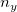
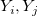
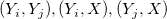
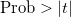

/math-d037fcd5fa24c8673763af9c9253cdb1.png "n_x") 調整変数Xで、2つの変数XとYを統合すると、その分散共分散行列は以下のようになります。
調整変数Xで、2つの変数XとYを統合すると、その分散共分散行列は以下のようになります。
偏相関係数は、調整変数が存在するときの2つの変数間の関係を説明するために使用されます。
 ランダム変数Yのセットと 調整変数Xで、2つの変数XとYを統合すると、その分散共分散行列は以下のようになります。
調整変数XのY変数の分散共分散行列は、以下で与えられます。
偏相関係数は以下のように計算されます。
偏相関係数がゼロという帰無仮説の検定に、t検定を使用できます。
自由度は、
ここでnは、完全相関の計算における観測値の数です。欠損値のペアワイズ削除において、与えられた調整変数Xの2つの変数  の偏相関の計算でnはXの対の中と  の対の中の観測値の最小の数です。
t統計量は、
ここで r は偏相関係数です。
両端の有意水準レベルは以下のように計算されます。